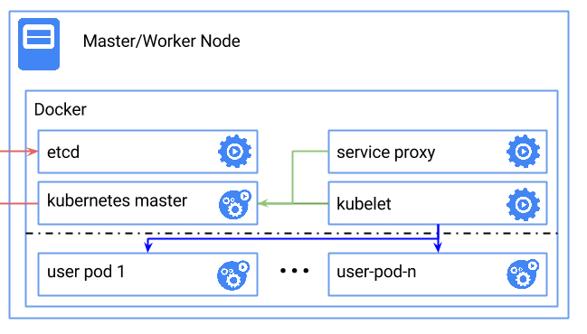

快速上手
目前，Kubenetes 支持在多种环境下的安装，包括本地主机（Fedora）、云服务（Google GAE、AWS 等）。然而最快速体验 Kubernetes 的方式显然是本地通过 Docker 的方式来启动相关进程。
下图展示了在单节点使用 Docker 快速部署一套 Kubernetes 的拓扑。

Kubernetes 依赖 Etcd 服务来维护所有主节点的状态。
启动 Etcd 服务。
|
启动主节点
启动 kubelet。
启动服务代理
|
测试状态
在本地访问 8080 端口，应该获取到类似如下的结果：
查看服务
所有服务启动后过一会，查看本地实际运行的 Docker 容器，应该有如下几个。
这些服务大概分为三类：主节点服务、工作节点服务和其它服务。
主节点服务
- apiserver 是整个系统的对外接口，提供 RESTful 方式供客户端和其它组件调用；
- scheduler 负责对资源进行调度，分配某个 pod 到某个节点上；
- controller-manager 负责管理控制器，包括 endpoint-controller（刷新服务和 pod 的关联信息）和 replication-controller（维护某个 pod 的复制为配置的数值）。
工作节点服务
- kubelet 是工作节点执行操作的 agent，负责具体的容器生命周期管理，根据从数据库中获取的信息来管理容器，并上报 pod 运行状态等；
- proxy 为 pod 上的服务提供访问的代理。
其它服务
- etcd 是所有状态的存储数据库；
gcr.io/google_containers/pause:0.8.0是 Kubernetes 启动后自动 pull 下来的测试镜像。